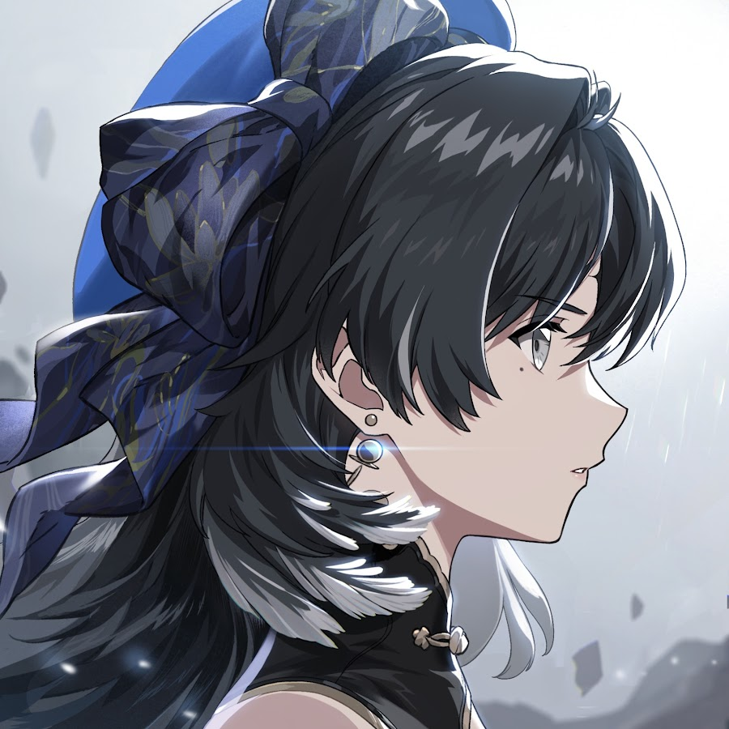
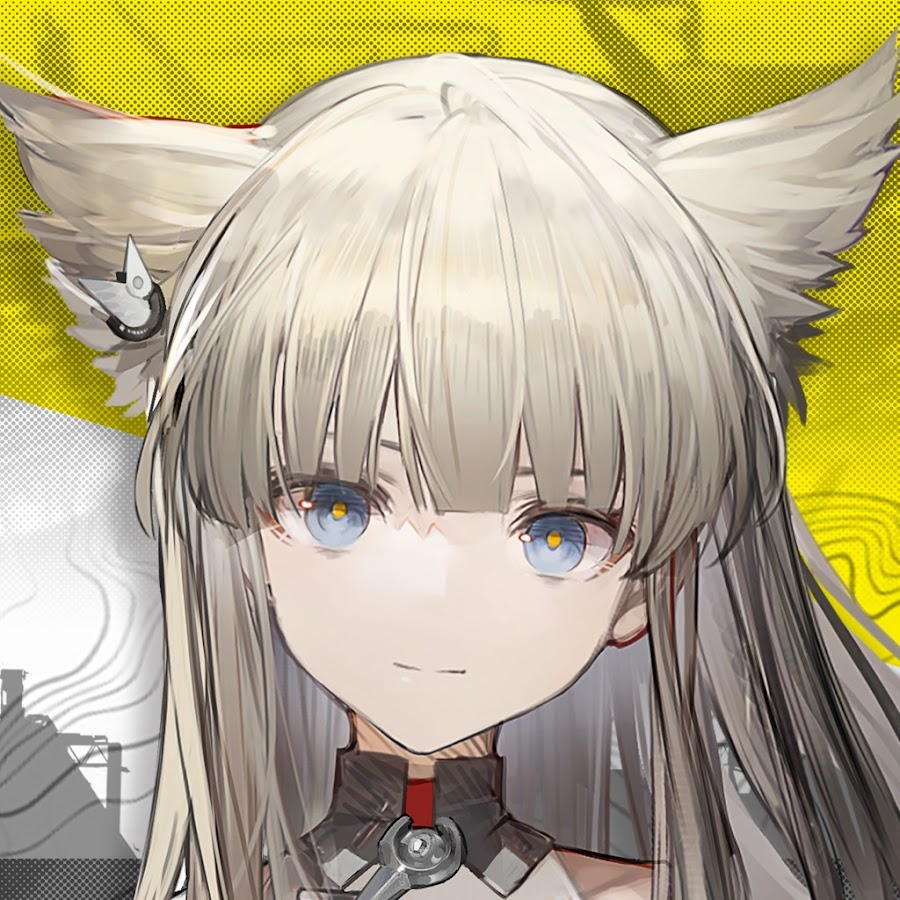

Berita Terkini
Patch, karakter baru, event, dan pengumuman resmi tiap game.

Wuthering Waves 8 berita
Wuthering Waves Version 3.7 Phase II Adds Suoming And New Events - The Otaku's Study
Wuthering Waves Version 3.7 Phase II Adds Suoming And New Events The Otaku's Study
Razer X Wuthering Waves Collaboration Review – Denia Is Always Watching - The Outerhaven
Razer X Wuthering Waves Collaboration Review – Denia Is Always Watching The Outerhaven
Wuthering Waves Version 3.7 Goes Live With More Content To Explore - The Otaku's Study
Wuthering Waves Version 3.7 Goes Live With More Content To Explore The Otaku's Study
‘Wuthering Waves’ Version 3.7 “Prism’s Illusion, Heart’s Illumination” Lands 30 Sept. - PlayDayOne
‘Wuthering Waves’ Version 3.7 “Prism’s Illusion, Heart’s Illumination” Lands 30 Sept. PlayDayOne
Wuthering Waves Version 3.7 goes live with new Resonator Hsin - Inven Global
Wuthering Waves Version 3.7 goes live with new Resonator Hsin Inven Global
Wuthering Waves Update Version 3.7 Is Live - The Outerhaven
Wuthering Waves Update Version 3.7 Is Live The Outerhaven
Wuthering Waves version 3.7 update ‘Prism’s Illusion, Heart’s Illumination’ launches September 30 - Gematsu
Wuthering Waves version 3.7 update ‘Prism’s Illusion, Heart’s Illumination’ launches September 30 Gematsu
Wuthering Waves Next Update “Prism’s Illusion, Heart’s Illumination” Launches September 30th - The Outerhaven
Wuthering Waves Next Update “Prism’s Illusion, Heart’s Illumination” Launches September 30th The Outerhaven
Genshin Impact
12 berita
Character Trailer - "Valeriy: Order in Practice" - Genshin Impact
Character Trailer - "Valeriy: Order in Practice" Genshin Impact
Genshin Impact 7.2 Release Date & Countdown (Mitya Banner) - GameRant
Genshin Impact 7.2 Release Date & Countdown (Mitya Banner) GameRant
Genshin Impact Imaginarium Theater 7.2 Guide - games.gg
Genshin Impact Imaginarium Theater 7.2 Guide games.gg
Genshin Impact 7.2 Teaser Shows Novokitezhgrad and Wingspan Peak - Happy Gamer
Genshin Impact 7.2 Teaser Shows Novokitezhgrad and Wingspan Peak Happy Gamer
Genshin Impact Ultimate Mitya Build Guide - games.gg
Genshin Impact Ultimate Mitya Build Guide games.gg
Hoyoverse’s Cozy Sim Petit Planet Coming to Nintendo Switch 2 in 2027 - IGN
Hoyoverse’s Cozy Sim Petit Planet Coming to Nintendo Switch 2 in 2027 IGN
Genshin Impact: Imaginarium Theater 7.2 Guide (November 2026) - Insider Gaming
Genshin Impact: Imaginarium Theater 7.2 Guide (November 2026) Insider Gaming
"The Grand Defense: Defy the Unjust Judgment" Event Overview: Participate to Invite a 4-Star Character of Your Choice - Genshin Impact
"The Grand Defense: Defy the Unjust Judgment" Event Overview: Participate to Invite a 4-Star Character of Your Choice Genshin Impact
Petit Planet confirmed for Nintendo Switch 2, from Genshin Impact dev - Nintendo Everything
Petit Planet confirmed for Nintendo Switch 2, from Genshin Impact dev Nintendo Everything
Genshin Impact Version 7.2 Update: How to Get 13,800+ Primogems for Free - GamingonPhone
Genshin Impact Version 7.2 Update: How to Get 13,800+ Primogems for Free GamingonPhone
How to Build Mitya In Genshin Impact—Best Teams, Rotations, Stats & Artifacts - Insider Gaming
How to Build Mitya In Genshin Impact—Best Teams, Rotations, Stats & Artifacts Insider Gaming
Genshin Impact Version 7.2 Event Calendar: List of Events and Rewards - GamingonPhone
Genshin Impact Version 7.2 Event Calendar: List of Events and Rewards GamingonPhone
Honkai: Star Rail
12 berita
Honkai: Star Rail to Release Version 4.7 Update on November 11 - Inven Global
Honkai: Star Rail to Release Version 4.7 Update on November 11 Inven Global
Screenshots of Honkai: Star Rail update 4.7. miHoYo showed Aha, a Trailblazer skin, and more - iXBT.games
Screenshots of Honkai: Star Rail update 4.7. miHoYo showed Aha, a Trailblazer skin, and more iXBT.games
Honkai: Star Rail Version 4.7 launches on November 11 - UnGeek
Honkai: Star Rail Version 4.7 launches on November 11 UnGeek
Manage a Dessert Shop with an Actual God in Honkai: Star Rail's Climactic PS5 Update - Push Square
Manage a Dessert Shop with an Actual God in Honkai: Star Rail's Climactic PS5 Update Push Square
It's the End of an Era for PlayStation's Hit Space Opera on November 11 - Comic Book Resources
It's the End of an Era for PlayStation's Hit Space Opera on November 11 Comic Book Resources
Honkai: Star Rail Version 4.7 launches on November 11 - RPG Site
Honkai: Star Rail Version 4.7 launches on November 11 RPG Site
Honkai: Star Rail Version 4.7 Brings Aeon Aha To The Battlefield Next Month - The Otaku's Study
Honkai: Star Rail Version 4.7 Brings Aeon Aha To The Battlefield Next Month The Otaku's Study
Honkai: Star Rail Version 4.7 Update brings new character Aeon ★ Aha and a login event on November 11, 2026 - GamingonPhone
Honkai: Star Rail Version 4.7 Update brings new character Aeon ★ Aha and a login event on November 11, 2026 GamingonPhone
Honkai: Star Rail Version 4.7 Launching November 11 - Gamers Heroes
Honkai: Star Rail Version 4.7 Launching November 11 Gamers Heroes
Honkai: Star Rail Launching Version 4.7 In November - OpenCritic
Honkai: Star Rail Launching Version 4.7 In November OpenCritic
Aha Is Summoning All The Eons To The Stage In Honkai: Star Rail’s 4.7 Update - MMOBomb
Aha Is Summoning All The Eons To The Stage In Honkai: Star Rail’s 4.7 Update MMOBomb
Honkai: Star Rail version 4.7 launches November 11 with Aha - Oyun Günlüğü
Honkai: Star Rail version 4.7 launches November 11 with Aha Oyun Günlüğü
Zenless Zone Zero
7 berita
Hoyoverse announces Petit Planet is coming to Nintendo Switch 2 in 2027 - My Nintendo News
Hoyoverse announces Petit Planet is coming to Nintendo Switch 2 in 2027 My Nintendo News
Zenless Zone Zero Comes to Life in New $89 Release Available Now - Comic Book Resources
Zenless Zone Zero Comes to Life in New $89 Release Available Now Comic Book Resources
Zenless Zone Zero Fans Get New Character-Inspired GUNNAR Performance Glasses - AndroidGuys
Zenless Zone Zero Fans Get New Character-Inspired GUNNAR Performance Glasses AndroidGuys
Zenless Zone Zero Version 3.3 arrives October 21 - Notebookcheck
Zenless Zone Zero Version 3.3 arrives October 21 Notebookcheck
Zenless Zone Zero Version 3.3 Update Arrives October 21 - Inven Global
Zenless Zone Zero Version 3.3 Update Arrives October 21 Inven Global
Zenless Zone Zero version 3.3 update ‘Journey to the Sky’ launches October 21 - Gematsu
Zenless Zone Zero version 3.3 update ‘Journey to the Sky’ launches October 21 Gematsu
HoYoverse Officially Reveals Characters for Zenless Zone Zero x Honkai Star Rail Collab - FandomWire
HoYoverse Officially Reveals Characters for Zenless Zone Zero x Honkai Star Rail Collab FandomWire

Arknights: Endfield 3 berita
‘Arknights: Endfield’ 1.6 Crafts A Fantastic Story But Fumbles With Its Character - But Why Tho?
‘Arknights: Endfield’ 1.6 Crafts A Fantastic Story But Fumbles With Its Character But Why Tho?
Si Build Guide - Weapons, Gear, & More - Endfield - Mobalytics
Si Build Guide - Weapons, Gear, & More - Endfield Mobalytics
Arknights: Endfield version update ‘Sanctuary of Ink’ launches October 15 alongside Steam release - Gematsu
Arknights: Endfield version update ‘Sanctuary of Ink’ launches October 15 alongside Steam release Gematsu
Neverness to Everness
12 berita
Akane Rin Build Guide - Weapons, Gear, & More - NTE - Mobalytics
Akane Rin Build Guide - Weapons, Gear, & More - NTE Mobalytics
Linko Build Guide - Weapons, Gear, & More - NTE - Mobalytics
Linko Build Guide - Weapons, Gear, & More - NTE Mobalytics
NTE Neverness to Everness details the Ver.1.5 update with tanks and two new characters - Foro3D
NTE Neverness to Everness details the Ver.1.5 update with tanks and two new characters Foro3D
GTA-Inspired PS5 Open World Goes Full Tycoon in Upcoming Update - Push Square
GTA-Inspired PS5 Open World Goes Full Tycoon in Upcoming Update Push Square
Tanks Take the Field in Neverness to Everness! Version 1.5 Livestream Recap Featuring Elyms and Exe - Inven Global
Tanks Take the Field in Neverness to Everness! Version 1.5 Livestream Recap Featuring Elyms and Exe Inven Global
Neverness to Everness Battles in Tanks! Version 1.5 Livestream Recap Featuring Elyms and Exe - Inven Global
Neverness to Everness Battles in Tanks! Version 1.5 Livestream Recap Featuring Elyms and Exe Inven Global
Neverness to Everness version 1.5 update ‘Once Upon a Glitched Call’ launches November 11 - Gematsu
Neverness to Everness version 1.5 update ‘Once Upon a Glitched Call’ launches November 11 Gematsu
Everything revealed for Neverness to Everness Version 1.5–Exe, Elyms, vehicles, events - GosuGamers
Everything revealed for Neverness to Everness Version 1.5–Exe, Elyms, vehicles, events GosuGamers
Neverness to Everness Half-Anniversary: Akane Rin & Free Rewards Guide - games.gg
Neverness to Everness Half-Anniversary: Akane Rin & Free Rewards Guide games.gg
‘Neverness to Everness’ Version 1.4's Second-half Kicks Off 21 Oct., "God Knows..." Collab Trailer - PlayDayOne
‘Neverness to Everness’ Version 1.4's Second-half Kicks Off 21 Oct., "God Knows..." Collab Trailer PlayDayOne
Neverness to Everness adds a rockin’ new character, a half-year anniversary, and a special quest October 21 - Massively Overpowered
Neverness to Everness adds a rockin’ new character, a half-year anniversary, and a special quest October 21 Massively Overpowered
Neverness to Everness (NTE) reveals Elyms and Exe as next playable characters in Version 1.5 - GosuGamers
Neverness to Everness (NTE) reveals Elyms and Exe as next playable characters in Version 1.5 GosuGamers
Marvel
11 berita
Marvel Retcons Avengers: Age Of Ultron's Ending With New Iron Man Sequel - The Direct
Marvel Retcons Avengers: Age Of Ultron's Ending With New Iron Man Sequel The Direct
Marvel’s Midnight Sons: Release Speculation, Cast, Characters, and Everything We Know - Murphy's Multiverse
Marvel’s Midnight Sons: Release Speculation, Cast, Characters, and Everything We Know Murphy's Multiverse
Rumor: Backrooms Star Renate Reinsve Has Met With Marvel To Play A Surprising X-Men Reboot Character - ComicBookMovie.com
Rumor: Backrooms Star Renate Reinsve Has Met With Marvel To Play A Surprising X-Men Reboot Character ComicBookMovie.com
'Avengers: Doomsday' Confirms Early International Release - IMDb
'Avengers: Doomsday' Confirms Early International Release IMDb
Marvel Studios Secretly Removed Chris Evans From An Avengers: Doomsday Trailer Scene - IMDb
Marvel Studios Secretly Removed Chris Evans From An Avengers: Doomsday Trailer Scene IMDb
New 'Avengers Doomsday' Trailer Finally Answers 1 Big Question About Doctor Doom's Franklin Richards Scene, According to MCU Fantastic Four Theory - The Direct
New 'Avengers Doomsday' Trailer Finally Answers 1 Big Question About Doctor Doom's Franklin Richards Scene, According to MCU Fantastic Four Theory The Direct
VisionQuest's Showrunner Confirmed A Major Marvel Cameo Most Fans Missed - SlashFilm
VisionQuest's Showrunner Confirmed A Major Marvel Cameo Most Fans Missed SlashFilm
Marvel Studios’ Sneaky 2026 Jean Grey Debut Marks 4th Time the MCU Hid a Major Character Introduction in Plain Sight - The Direct
Marvel Studios’ Sneaky 2026 Jean Grey Debut Marks 4th Time the MCU Hid a Major Character Introduction in Plain Sight The Direct
Marvel Alters 'Avengers Doomsday' Footage of Robert Downey Jr.'s Doctor Doom and James Marsden's Cyclops From Trailer Scenes - The Direct
Marvel Alters 'Avengers Doomsday' Footage of Robert Downey Jr.'s Doctor Doom and James Marsden's Cyclops From Trailer Scenes The Direct
Marvel Studios Officially Confirms MCU Phase 7's First Sequel - The Direct
Marvel Studios Officially Confirms MCU Phase 7's First Sequel The Direct
Marvel Studios Is Rebooting Black Panther With the Perfect Story Arc - The Direct
Marvel Studios Is Rebooting Black Panther With the Perfect Story Arc The Direct
▶ Channel YouTube Resmi
Channel resmi tiap publisher. Thumbnail diambil langsung dari channel YouTube masing-masing.
Berita di halaman ini diambil dari Google News RSS dan Dialihkan ke artikel asli tiap penerbit saat kamu klik. Starwise tidak meng-host ulang isi artikel tersebut.